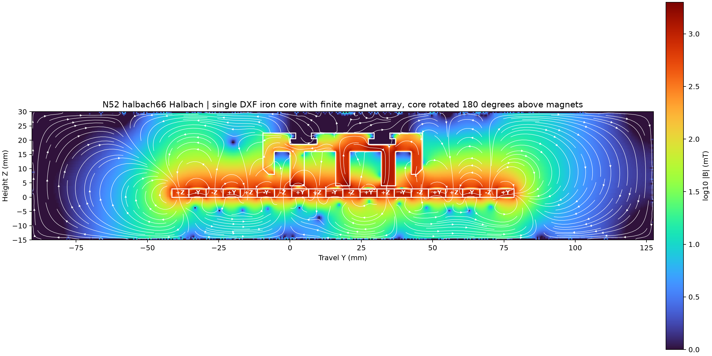
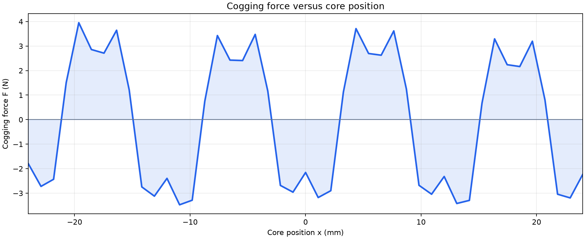
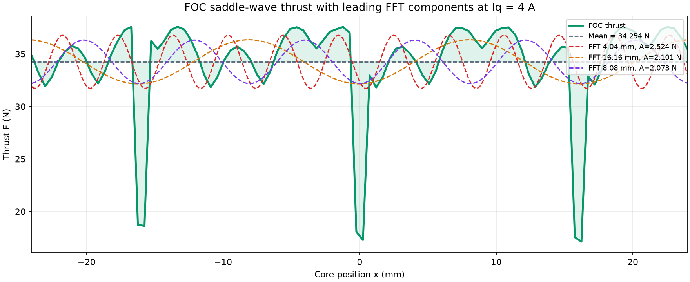

N52 Halbach 阵列磁场强度图
每张图均为 N52 有限五组磁铁阵列与 DXF 原始单个铁芯轮廓的二维磁静态求解结果，单位 mT。铁芯旋转 180° 后置于磁铁上方，并与磁铁阵列以 DXF 铁芯几何中心对齐。


已选择 6 : 6 基础 Halbach 动画。


⭕ 表示磁化方向出屏，主磁铁为 +Z，N 极朝上。
❌ 表示磁化方向入屏，主磁铁为 -Z，S 极朝上。
侧片方向：N 极朝向相邻的 N 极朝上的主磁铁，接缝序列为 -Y、+Y、-Y。
6:6 为 24 mm 磁极对内的 +Z、-Y、-Z、+Y 四段基础 Halbach。独立的周期齿槽力估算采用 DXF 铁芯轮廓并连续叠厚积分：零斜极为 1.726 N 峰峰值，14.04° 为约 0.193 N，26.565° 为理想线性周期模型约 0.0010 N。它优先提升单侧磁通。
斜极取舍：14.04° 的磁场基波系数约 0.955，适合推力优先；26.565° 的系数约 0.827，适合齿槽力优先。实际残余力由 B-H 曲线、端部磁通、加工与装配误差决定。
色图由二维磁矢势方程求解：DXF 闭合轮廓在网格内赋予 35W300 的线性 μr≈4000，气隙为 1 mm，磁铁厚度为 3 mm。铁芯绕其中心旋转 180°，齿顶位于磁铁顶面上方 1 mm。求解域随五组磁铁阵列扩展，四周采用远离模型的固定磁矢势边界；铁芯位于画面中心，左右侧磁铁单元数相同，所有磁铁块均绘制轮廓。
每种磁铁排布均提供 200 帧动画，展示铁芯按 -24 mm、+24 mm、-24 mm 的顺序往复运动。曲线使用 100 个单程位置点计算。白色箭头表示计算得到的齿槽力方向，箭头长度随力值绝对值变化，箭头上方显示当前位置与瞬时齿槽力。动画下方曲线给出齿槽力 F 随位置 x 的变化。
FOC 推力模型：三齿三相集中绕组，每相 266 匝、0.4 mm 线径、有效叠厚 16 mm。图中使用 Iq=4 A 峰值的三次谐波注入马鞍波电流；推力由各齿气隙磁链的位置导数与瞬时相电流相乘计算，未叠加齿槽力。结果为二维线性磁路与默认相序下的设计比较值。